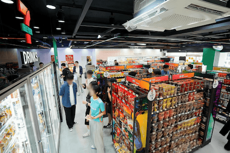

home > 창업안내 > 창업상담
창업상담
가게를 여는 일, 삶의 방향을 함께 그려가는 시작입니다.
창업설명회 및
상담 신청
-
• 고객센터로 1:1 상담 신청이 가능합니다.
(유선 / 홈페이지). -
• 점포물건정보 메뉴에서 지역별 담당자 및 연락처 확인 가능합니다 창업설명회 안내
점포 상권 분석
-
• 상담 전 점포을 확인할 수 있습니다.
①PURPLE 타입: 보유한 점포가 있거나 직접 임차하시는 경우
② GREEN 타입: 본부 보유 점포로 진행하시는 경우 -
• 상세 설명은 가맹 상품 소개 메뉴를 확인해 주세요. 가맹상품 소개 더보기
상담 및
정보공개서 교부
- • 창업을 결정 시 상담 후 정보공개서를 받으시게 됩니다.
-
• 관련 법상 정보공개서 서명 후 14일이 지나야 가맹 계약이 가능합니다.
①정보공개서
② 인근점포리스트
③ 사전교부용계약서 -
• 정보공개서 서명은 사전 절차로 계약 의무가 발생하지 않습니다.
계약 체결 및 투자금 납임
- • 7-ELEVEn 가맹 계약 총괄 담당자(CSP)와 본계약을 진행하는 단계입니다.
-
• 계약 후 투자금 납부가 완료되면 착공에 들어갑니다 -
• 투자금에는 무엇이 있나요?
① purple 타입 : 가입비+상품대금
② green 타입 : 가입비+상품대금+투자예치금 가맹상품소개 더보기
가맹 입문 교육
- • 가맹입문교육은 총 7일이며, 교육 미이수 시 개점이 불가합니다.
-
• 가맹입문교육은 계약 전/후로 입과 가능합니다
-
• 현재 서울/부산/대구/광주/대전에서 교육장을 운영하고 있습니다. -
• 점포 운영에 필요한 7-ELEVEn의 노하우를 배우고 실습할 수 있습니다. -
• 최대 2인까지 동시 입과 가능합니다.
점포 공사 및 인허가 구비
-
• 점포 공사는 평균 9일이 소요됩니다. 현장 상황에 따라 ±
2일 변동 가능합니다.
-
• 점포 공사 등에 대해 각 분야의 전문 담당자가 지원합니다. -
• 어떤 인허가를 취득하나요?
⁂ 신용카드, 통신, 안전상비, 즉석조리, 종량제 등 점포 운영일반에 필요한 인허가 취득이 필요합니다.
진열 및 검수
- • 공사가 완료되면 개점 이틀 전 부터 전문진열 용역이 진열을 진행합니다.
-
• 개점 하루 전 점주님의 최종 검수가 진행됩니다.
최종 점검

성공적인 시작을 위한 마지막 확인
개점 D-DAY
드디어 개점입니다!
개점일 전후로 총평을 진행하며,
시설 및 점포 미비사항을 보충합니다.